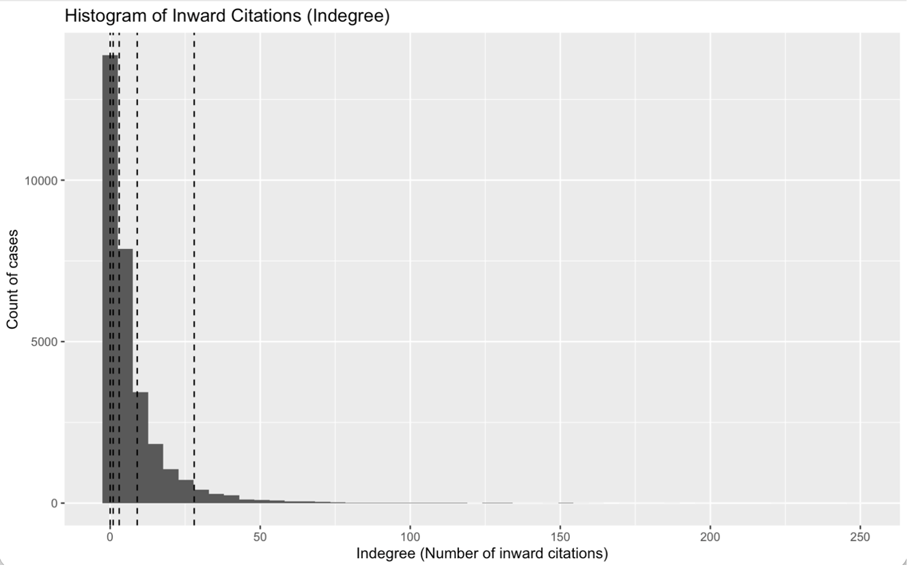
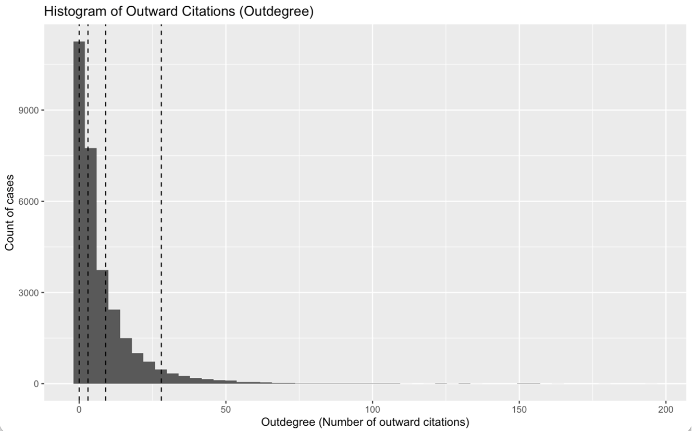
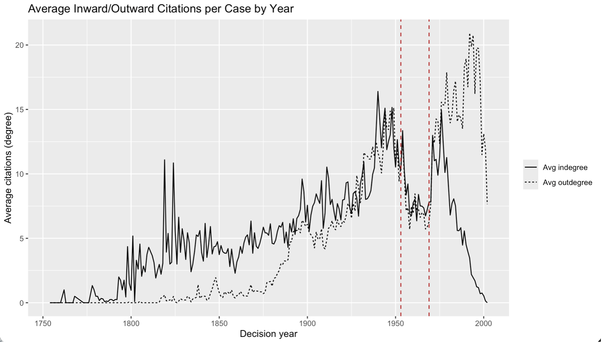
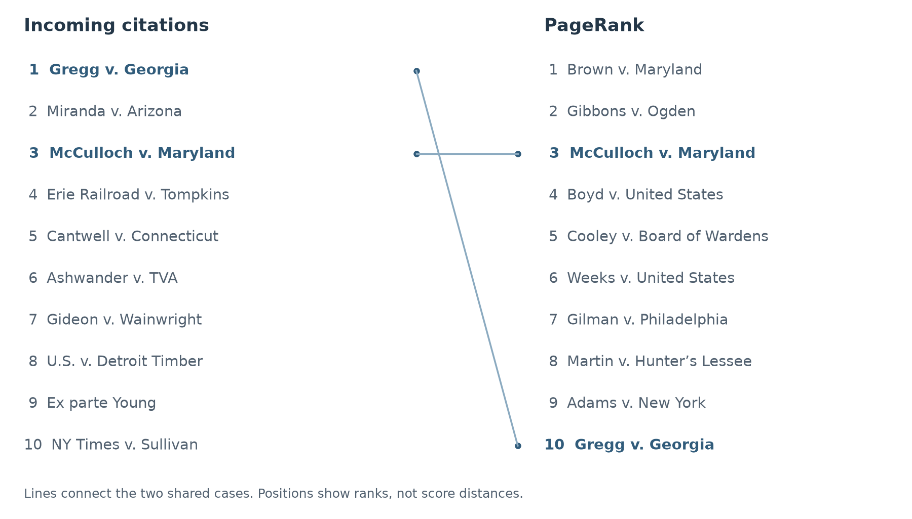
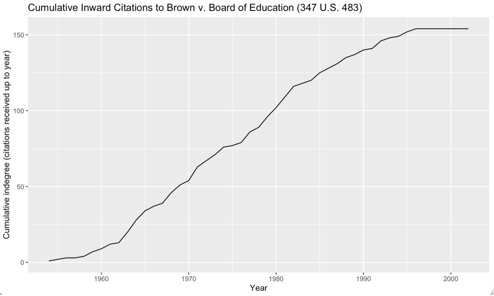

What Makes a Legal Precedent Influential?
Mapping the U.S. Supreme Court Citation Network
A case may attract many citations, or it may be cited by decisions that are themselves central to a body of law. This project compares those two forms of prominence in a directed citation network and examines what each reveals—and leaves unresolved—about legal importance.
Frequency and structural position
A decision may be cited often, or be cited by cases that are themselves central to legal argument. This project compares incoming citation counts with PageRank, relates leading cases to expert classifications, and traces the citation history of Brown v. Board of Education. These measures capture different aspects of network prominence.
Precedent links a current legal argument to earlier decisions. Counting these references treats every incoming citation equally; a recursive measure also considers where the citation comes from in the wider network. The contrast is useful precisely because a case can have broad immediate visibility without occupying the same position in the longer chains connecting decisions.
The norm of stare decisis grounds judicial reasoning in earlier decisions, making citations a trace of how opinions invoke precedent. The network approach developed in Imai and Williams (2022) turns that relation into a directed structure: the citing opinion points to the precedent it uses. This provides a way to examine authority through repeated reference and through chains of reference, while leaving the legal meaning of each citation to contextual analysis.
The Supreme Court citation network
The Supreme Court citation network compiled by James H. Fowler and Sangick Jeon connects majority opinions and the cases they cite in the United States Reports, with records spanning 1754–2002. The Harvard Dataverse replication archive accompanies their study of precedent authority. Its case records and directed references support a comparison of citation frequency with position in chains of precedent. Early reporter cases predate the Supreme Court itself.
The analytical network contains 30,288 cases and 216,738 citation edges. Each edge points from a citing case to a cited case. Incoming degree counts references received; outgoing degree counts references made. Case attributes include identifiers, dates, and expert-importance indicators.

View full-size figure
{kind=link}

View full-size figure
{kind=link}
The two degree distributions describe complementary sides of the same edges. Their means are equal because every citation contributes once to a citing case’s outgoing degree and once to a cited case’s incoming degree. Their shapes need not match. The long incoming tail shows how unevenly references accumulate, whereas outgoing degree describes how extensively decisions cite other cases.
Citation practice changes across judicial eras
Grouping cases by decision year reveals how citation practice and later reception vary together. The solid line shows average incoming citations received by cases decided in that year; the dashed line shows average outgoing citations made by those cases. Red vertical markers identify the Warren Court period, 1953–1969.

View full-size figure
{kind=link}
During much of the Warren Court period, both averages occupy a lower, flatter band than the immediately preceding mid-century peaks. After 1969, average outgoing citations rise strongly, indicating increasingly citation-dense opinions in later decades. This is a historically distinctive descriptive pattern; it does not establish a causal effect of the Warren Court on citation behavior.
The series have different temporal exposure. Incoming citations require later decisions: recent cases have had fewer subsequent years in the observed corpus in which to be cited. This right truncation mechanically depresses their average indegree near the end of the series. Outgoing degree is much less affected because citations made are observed when an opinion is written. The end-of-series divergence therefore cannot show that recent precedents have become less important.
Two rankings of influential precedents
Gregg v. Georgia leads incoming citations with 248, followed by Miranda v. Arizona with 221. PageRank instead places Brown v. Maryland and Gibbons v. Ogden first. Brown v. Maryland is distinct from Brown v. Board of Education.

View full-size figure
{kind=link}
Only two cases appear in both lists. PageRank elevates decisions cited by other structurally prominent cases, including some with moderate citation counts. The difference is substantive: frequency and recursive centrality describe different forms of prominence.
Against the expert indicators, both lists include eight Oxford-selected cases. The incoming-citation top ten includes eight LII-selected cases, compared with five for PageRank. These small comparisons provide context, not a definitive ground truth for legal importance.
PageRank is therefore more than a rescaling of citation counts. Among its leading cases, Adams v. New York has 36 incoming references and Gilman v. Philadelphia has 55, far fewer than the incoming-degree leader. Their positions depend on the structure of the cases citing them. The ranking comparison makes this distinction visible without suggesting that the distance between ranks measures a proportional difference in authority.
Both measures are exposure-sensitive: older cases have had more opportunities to receive citations, so the rankings should not be interpreted as age-adjusted measures of legal influence.
Qualitative evaluation supplies a different standard. Hall’s (1999) The Oxford Guide to United States Supreme Court Decisions provides one of the expert selections represented in the case data. Comparing its judgments with centrality asks whether structural prominence aligns with recognized legal significance. Disagreement is informative because doctrinal importance and position in a citation network need not coincide.
Following Brown through later decisions
The cumulative citations to Brown v. Board of Education reach 154 within the observed corpus. Its rising trajectory shows prominence accumulating over decades, something a single ranking conceals.

View full-size figure
{kind=link}
Citations can endorse, distinguish, criticize, or otherwise discuss a precedent. The network records the reference, not its meaning, and later cases have less time to receive citations.
The cumulative curve rises slowly at first, then more rapidly from around the 1960s, before flattening toward the end of the observed period. Its slope reflects the pace of additional citations, while its height records everything accumulated so far. A plateau therefore concerns the arrival of new references in this corpus, rather than the disappearance of earlier citations or the reversal of a legal holding.
Brown’s cumulative trajectory is also embedded in changing citation practices. The later rise in outgoing citations means that opportunities for precedents to be invoked expand as opinions become more citation-dense. This provides context for Brown’s accumulation of references, without establishing how much of its trajectory reflects changing writing practices rather than its particular doctrinal role.
Influence depends partly on its measurement
Incoming degree makes citation frequency visible; PageRank emphasizes chains of authority; citation histories show how prominence develops. Their disagreement argues for reading the measures together. Distinguishing citation contexts and comparing cases with similar exposure time would bring the network account closer to substantive legal interpretation.
The expert comparison adds another perspective because the Oxford and LII indicators reflect selected judgments of case importance. Agreement with a top-ten list is informative, but absence from an expert selection does not establish that a decision lacks importance. Nor does agreement among several measures settle the meaning of the citations. The strongest interpretation combines structural evidence with the substantive legal context of particular cases.
References
Hall, K. L. (Ed.). (1999). The Oxford guide to United States Supreme Court decisions. Oxford University Press.
Imai, K., & Williams, N. W. (2022). Quantitative social science: An introduction in tidyverse. Princeton University Press.